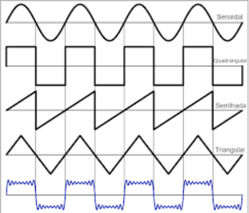
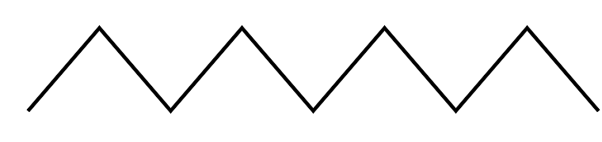
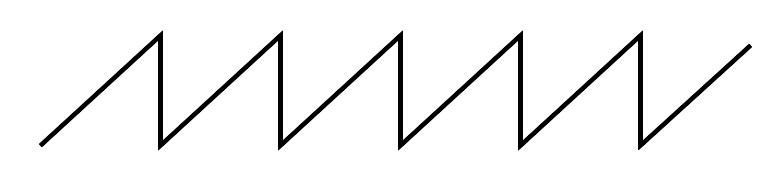
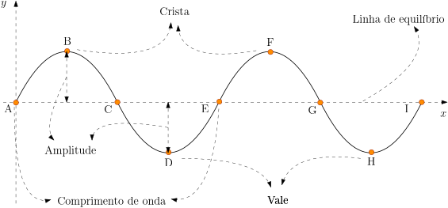
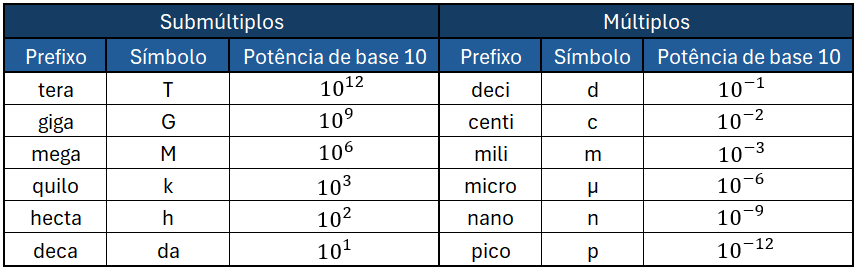

Objetivos
Ao final desta aula, você deverá ser capaz de:
- Distinguir ondas periódicas e não periódicas.
- Reconhecer formas de ondas: senoidal, quadrada, triangular e serrilhada.
- Identificar crista, vale, amplitude, comprimento de onda, período e frequência.
- Diferenciar grandezas espaciais e temporais em uma onda periódica.
- Aplicar as relações \(f=1/T\) e \(v=\lambda f\).
- Usar a equação fundamental da ondulatória para calcular velocidade, frequência ou comprimento de onda.
- Interpretar a equação de uma onda senoidal em função da posição e do tempo.
- Interpretar gráficos de ondas em função da posição ou do tempo.
- Converter unidades de comprimento, tempo e frequência em problemas simples.
Introdução
Na aula anterior, vimos que ondas podem ser classificadas quanto à natureza, direção de vibração e dimensão de propagação. Agora vamos estudar as grandezas que descrevem uma onda periódica.
Uma fonte periódica repete seu movimento em intervalos regulares. Essa regularidade permite medir grandezas como frequência, período e comprimento de onda, essenciais para acústica, óptica, telecomunicações e eletrônica.
Essas grandezas funcionam como uma espécie de “vocabulário matemático” das ondas. Quando dizemos que uma onda tem certa frequência, determinado comprimento de onda ou uma velocidade de propagação específica, estamos descrevendo como a perturbação se repete no tempo e no espaço.
Nesta aula, a atenção estará voltada para a leitura de figuras, gráficos e enunciados. O estudante deve aprender a identificar cristas, vales, amplitude e comprimento de onda em representações espaciais, além de reconhecer período e frequência em situações temporais. A relação \(v=\lambda f\) será usada como ponte entre a descrição visual da onda e a resolução de problemas numéricos.
Uma ideia importante é separar aquilo que depende da fonte daquilo que depende do meio. A frequência e o período estão ligados ao ritmo da fonte que produz a onda. Já a velocidade de propagação depende principalmente das propriedades do meio. O comprimento de onda resulta da combinação entre esses dois aspectos.
Ondas Periódicas e Não Periódicas
- Onda periódica
- Repete o mesmo padrão em intervalos regulares de tempo e de espaço. Exemplos: som de diapasão, corrente alternada, sinal de rádio.
- Onda não periódica
- Não apresenta repetição regular. Exemplos: estalo, batida, trovão curto, pulso em uma corda.

Em uma onda periódica, podemos escolher qualquer ciclo completo para medir as grandezas. Em uma onda não periódica, ainda pode haver propagação de energia, mas não faz sentido falar de um único período ou de uma única frequência bem definida para todo o fenômeno.
Formas de Onda
Uma onda periódica pode ter diferentes formas. A forma da onda mostra como a perturbação varia durante a repetição do ciclo. Mesmo quando duas ondas têm a mesma frequência e o mesmo comprimento de onda, elas podem ter formas diferentes.
- 1. Onda senoidal
- Forma suave e contínua. É muito importante porque descreve oscilações harmônicas simples e aparece como modelo básico em som, luz, cordas vibrantes e sinais elétricos.

- 2. Onda semissenoidal ou retificada
- Apresenta arcos repetidos, como se apenas uma parte da oscilação senoidal aparecesse. Pode representar sinais pulsantes, nos quais a perturbação não alterna igualmente acima e abaixo da linha de equilíbrio.

- 3. Onda triangular
- Sobe e desce linearmente, formando segmentos inclinados. Apesar de não ser suave como a senoidal, ainda pode ter período, frequência, amplitude e comprimento de onda bem definidos.

- 4. Onda dente-de-serra
- Apresenta subida gradual e queda brusca, ou o inverso. É comum em eletrônica, síntese sonora e em modelos de sinais que acumulam uma grandeza e depois retornam rapidamente ao valor inicial.

- 5. Onda periódica complexa
- Repete um padrão mais elaborado. Mesmo parecendo irregular dentro de cada ciclo, ela ainda é periódica se o mesmo desenho volta a aparecer depois de intervalos iguais.

- 6. Onda quadrada
- Alterna bruscamente entre dois níveis. É comum em eletrônica digital e em sinais que mudam entre estados bem definidos, como ligado/desligado ou alto/baixo.

A forma senoidal é especialmente importante porque muitas ondas periódicas podem ser estudadas como combinação de ondas senoidais. Mesmo assim, as grandezas básicas, como período, frequência e comprimento de onda, também podem ser identificadas em ondas quadradas, triangulares, dente-de-serra ou complexas quando há repetição regular.
Elementos de Uma Onda

- Crista
- Ponto mais alto da onda em relação à linha de equilíbrio.
- Vale
- Ponto mais baixo da onda em relação à linha de equilíbrio.
- Amplitude (\(A\))
- Distância entre a linha de equilíbrio e uma crista ou um vale. Em muitos casos, uma amplitude maior indica maior energia transportada; para várias ondas, a energia ou intensidade é proporcional ao quadrado da amplitude.
- Comprimento de onda (\(\lambda\))
- Distância entre dois pontos consecutivos em mesma fase, como crista a crista ou vale a vale.
- Período (\(T\))
- Tempo para a fonte completar uma oscilação.
- Frequência (\(f\))
- Número de oscilações por segundo. Unidade: hertz (Hz).
- Velocidade de propagação (\(v\))
- Rapidez com que a perturbação se propaga no meio.
As grandezas podem ser separadas em dois grupos:
- Grandezas espaciais
- São medidas ao longo da posição, como amplitude e comprimento de onda.
- Grandezas temporais
- São medidas ao longo do tempo, como período e frequência.
Uma confusão comum é procurar o período em um gráfico da forma da onda no espaço. Nesse tipo de gráfico, o eixo horizontal representa posição, então medimos comprimento de onda. Para medir período, o eixo horizontal precisa representar tempo.
Frequência e Período
A frequência e o período são inversos:
\[ \boxed{f=\frac{1}{T}} \]
\[ \boxed{T=\frac{1}{f}} \]
Se uma fonte realiza \(N\) oscilações em um intervalo \(\Delta t\), a frequência também pode ser calculada por:
\[ \boxed{f=\frac{N}{\Delta t}} \]
Como \(1\,\text{Hz}=1\,\text{s}^{-1}\), uma frequência de \(10\,\text{Hz}\) significa que ocorrem \(10\) oscilações a cada segundo.
Equação Fundamental da Ondulatória
A equação fundamental da ondulatória relaciona a velocidade de propagação, o comprimento de onda e a frequência:
\[ \boxed{v=\lambda f} \]
Nessa expressão:
- \(v\) é a velocidade de propagação da onda;
- \(\lambda\) é o comprimento de onda;
- \(f\) é a frequência da onda.
Essa equação pode ser entendida assim: durante um período \(T\), a onda avança uma distância igual a um comprimento de onda \(\lambda\). Como velocidade é distância dividida pelo tempo:
\[ v=\frac{\lambda}{T} \]
Como \(f=1/T\), também podemos usar:
\[ \boxed{v=\frac{\lambda}{T}} \]
Em um mesmo meio, se a velocidade de propagação permanece constante, aumentar a frequência diminui o comprimento de onda. Isso ocorre porque:
\[ \lambda=\frac{v}{f} \]
Portanto, frequência e comprimento de onda são inversamente proporcionais quando \(v\) é constante.
Equação da Onda
A equação fundamental \(v=\lambda f\) informa a velocidade de propagação a partir de grandezas da onda. Já a equação da onda descreve a posição de cada ponto da perturbação em cada instante.
Para uma onda senoidal que se propaga no sentido positivo do eixo \(x\), uma forma comum é:
\[ \boxed{y(x,t)=A\operatorname{sen}(kx-\omega t+\varphi_0)} \]
Nessa expressão:
- \(y(x,t)\) é a elongação, isto é, o deslocamento do ponto do meio em relação à posição de equilíbrio;
- \(A\) é a amplitude;
- \(x\) é a posição;
- \(t\) é o tempo;
- \(k\) é o número de onda;
- \(\omega\) é a frequência angular;
- \(\varphi_0\) é a fase inicial.
O número de onda e a frequência angular são calculados por:
\[ \boxed{k=\frac{2\pi}{\lambda}} \]
\[ \boxed{\omega=2\pi f=\frac{2\pi}{T}} \]
Assim, a velocidade também pode ser escrita como:
\[ \boxed{v=\frac{\omega}{k}} \]
Essa expressão é coerente com \(v=\lambda f\), pois:
\[ \frac{\omega}{k}= \frac{2\pi f}{2\pi/\lambda} =\lambda f \]
O sinal entre \(kx\) e \(\omega t\) indica o sentido de propagação, quando usamos essa convenção:
- \(y=A\operatorname{sen}(kx-\omega t+\varphi_0)\): propagação no sentido positivo de \(x\);
- \(y=A\operatorname{sen}(kx+\omega t+\varphi_0)\): propagação no sentido negativo de \(x\).
Nesta aula, a equação da onda será usada principalmente para identificar amplitude, comprimento de onda, frequência, período, velocidade e sentido de propagação.
Unidades e Prefixos
Em problemas de ondas, é comum converter unidades.

Conversões frequentes:
- \(1\,\text{km}=10^3\,\text{m}\);
- \(1\,\text{cm}=10^{-2}\,\text{m}\);
- \(1\,\text{mm}=10^{-3}\,\text{m}\);
- \(1\,\mu\text{s}=10^{-6}\,\text{s}\);
- \(1\,\text{ns}=10^{-9}\,\text{s}\);
- \(1\,\text{kHz}=10^3\,\text{Hz}\);
- \(1\,\text{MHz}=10^6\,\text{Hz}\).
Como Ler Gráficos
Em um gráfico da onda em função da posição, a distância horizontal entre duas cristas consecutivas é o comprimento de onda.
Em um gráfico da oscilação em função do tempo, o intervalo entre duas cristas consecutivas é o período.
Se um trecho entre dois pontos contém mais de um ciclo, podemos calcular:
\[ \lambda=\frac{\text{distância total}}{\text{número de ciclos}} \]
Também é possível usar a mesma ideia no tempo:
\[ T=\frac{\text{tempo total}}{\text{número de ciclos}} \]
Antes de calcular, observe o eixo horizontal:
- se o eixo está em metros, centímetros ou milímetros, o gráfico é espacial;
- se o eixo está em segundos, milissegundos ou microssegundos, o gráfico é temporal.
Exemplos Resolvidos
Exemplo 2.1 - Frequência e Período
Uma fonte realiza \(50\) oscilações em \(10\,\text{s}\). Determine a frequência em hertz e o período em segundos.
Resolução:
Como a frequência é o número de oscilações dividido pelo intervalo de tempo:
\[ f=\frac{50}{10}=5\,\text{Hz} \]
O período é o inverso da frequência:
\[ T=\frac{1}{f}=\frac{1}{5}=0{,}20\,\text{s} \]
Resposta: \(f=5\,\text{Hz}\) e \(T=0{,}20\,\text{s}\).
Exemplo 2.2 - Velocidade de Propagação
Uma onda tem comprimento de onda \(2{,}0\,\text{m}\) e frequência \(8\,\text{Hz}\). Determine sua velocidade em metros por segundo.
Resolução:
Usamos a equação fundamental da ondulatória:
\[ v=\lambda f=2{,}0\cdot 8=16\,\text{m/s} \]
Resposta: \(16\,\text{m/s}\).
Exemplo 2.3 - Comprimento de Onda
Uma onda se propaga em uma corda com velocidade \(12\,\text{m/s}\). A fonte vibra com frequência \(3\,\text{Hz}\). Determine o comprimento de onda em metros.
Resolução:
Partimos de:
\[ v=\lambda f \]
Isolando \(\lambda\):
\[ \lambda=\frac{v}{f} \]
Substituindo os valores:
\[ \lambda=\frac{12}{3}=4\,\text{m} \]
Resposta: \(\lambda=4\,\text{m}\).
Exemplo 2.4 - Cálculo com Gráfico Espacial
Na figura, a distância entre os pontos A e B é \(60\,\text{mm}\) e corresponde a \(1{,}5\) comprimentos de onda. O período é \(2\,\mu\text{s}\). Determine a velocidade em metros por segundo.

Resolução:
Primeiro, calculamos o comprimento de onda:
\[ \lambda=\frac{60\,\text{mm}}{1{,}5}=40\,\text{mm}=40\cdot10^{-3}\,\text{m} \]
Agora:
\[ v=\frac{\lambda}{T}=\frac{40\cdot10^{-3}}{2\cdot10^{-6}}=2{,}0\cdot10^4\,\text{m/s} \]
Resposta: \(2{,}0\cdot10^4\,\text{m/s}\).
Exemplo 2.5 - Período a Partir da Velocidade
Na figura, a distância entre A e B é \(10\,\text{cm}\) e corresponde a \(2{,}5\) comprimentos de onda. A velocidade é \(800\,\text{m/s}\). Determine o período em segundos e em microssegundos.

Resolução:
\[ \lambda=\frac{10\,\text{cm}}{2{,}5}=4\,\text{cm}=4\cdot10^{-2}\,\text{m} \]
\[ T=\frac{\lambda}{v}=\frac{4\cdot10^{-2}}{800}=5\cdot10^{-5}\,\text{s} \]
Como \(1\,\mu\text{s}=10^{-6}\,\text{s}\):
\[ T=50\,\mu\text{s} \]
Resposta: \(50\,\mu\text{s}\).
Exemplo 2.6 - Gráfico Temporal
Uma fonte produz \(4\) oscilações completas em \(0{,}80\,\text{s}\). O comprimento de onda no meio é \(1{,}5\,\text{m}\). Determine o período em segundos, a frequência em hertz e a velocidade da onda em metros por segundo.
Resolução:
O período é o tempo total dividido pelo número de ciclos:
\[ T=\frac{0{,}80}{4}=0{,}20\,\text{s} \]
A frequência é o inverso do período:
\[ f=\frac{1}{T}=\frac{1}{0{,}20}=5\,\text{Hz} \]
Agora aplicamos a equação fundamental:
\[ v=\lambda f=1{,}5\cdot5=7{,}5\,\text{m/s} \]
Resposta: \(T=0{,}20\,\text{s}\), \(f=5\,\text{Hz}\) e \(v=7{,}5\,\text{m/s}\).
Exemplo 2.7 - Interpretando a Equação da Onda
Uma onda é descrita, com \(y\) em metros, \(x\) em metros e \(t\) em segundos, por:
\[ y(x,t)=0{,}04\operatorname{sen}(2\pi x-20\pi t) \]
Determine a amplitude em metros e em centímetros, o comprimento de onda em metros, a frequência em hertz, o período em segundos, a velocidade em metros por segundo e o sentido de propagação.
Resolução:
Comparamos a equação dada com:
\[ y(x,t)=A\operatorname{sen}(kx-\omega t+\varphi_0) \]
A amplitude é o número que multiplica o seno:
\[ A=0{,}04\,\text{m}=4\,\text{cm} \]
O número que multiplica \(x\) é o número de onda:
\[ k=2\pi\,\text{rad/m} \]
Como \(k=2\pi/\lambda\):
\[ \lambda=\frac{2\pi}{k}=\frac{2\pi}{2\pi}=1\,\text{m} \]
O número que multiplica \(t\) é a frequência angular:
\[ \omega=20\pi\,\text{rad/s} \]
Como \(\omega=2\pi f\):
\[ f=\frac{\omega}{2\pi}=\frac{20\pi}{2\pi}=10\,\text{Hz} \]
O período é:
\[ T=\frac{1}{f}=\frac{1}{10}=0{,}10\,\text{s} \]
A velocidade é:
\[ v=\lambda f=1\cdot10=10\,\text{m/s} \]
Como a equação tem \(kx-\omega t\), a onda se propaga no sentido positivo de \(x\).
Resposta: \(A=0{,}04\,\text{m}=4\,\text{cm}\), \(\lambda=1\,\text{m}\), \(f=10\,\text{Hz}\), \(T=0{,}10\,\text{s}\), \(v=10\,\text{m/s}\), sentido positivo de \(x\).
Exemplo 2.8 - Montando a Equação da Onda
Uma onda senoidal tem amplitude \(5\,\text{cm}\), comprimento de onda \(2\,\text{m}\) e frequência \(3\,\text{Hz}\). Escreva uma equação para essa onda propagando-se no sentido positivo de \(x\), com fase inicial nula, usando \(y\) em metros, \(x\) em metros e \(t\) em segundos.
Resolução:
Primeiro, convertemos a amplitude:
\[ A=5\,\text{cm}=0{,}05\,\text{m} \]
Calculamos o número de onda:
\[ k=\frac{2\pi}{\lambda}=\frac{2\pi}{2}=\pi\,\text{rad/m} \]
Calculamos a frequência angular:
\[ \omega=2\pi f=2\pi\cdot3=6\pi\,\text{rad/s} \]
Como a onda se propaga no sentido positivo de \(x\), usamos \(kx-\omega t\). Como a fase inicial é nula, \(\varphi_0=0\).
Resposta:
\[ y(x,t)=0{,}05\operatorname{sen}(\pi x-6\pi t) \]
Exemplo 2.9 - Sentido de Propagação
Uma onda é descrita, com \(y\) em metros, \(x\) em metros e \(t\) em segundos, por:
\[ y(x,t)=0{,}02\operatorname{sen}(4\pi x+8\pi t) \]
Determine o sentido de propagação, o comprimento de onda em metros, a frequência em hertz e a velocidade em metros por segundo.
Resolução:
O sinal entre os termos é positivo: \(kx+\omega t\). Portanto, a onda se propaga no sentido negativo de \(x\).
Agora identificamos:
\[ k=4\pi\,\text{rad/m} \]
\[ \omega=8\pi\,\text{rad/s} \]
Como \(k=2\pi/\lambda\):
\[ \lambda=\frac{2\pi}{4\pi}=0{,}50\,\text{m} \]
Como \(\omega=2\pi f\):
\[ f=\frac{8\pi}{2\pi}=4\,\text{Hz} \]
Então:
\[ v=\lambda f=0{,}50\cdot4=2{,}0\,\text{m/s} \]
Resposta: sentido negativo de \(x\), \(\lambda=0{,}50\,\text{m}\), \(f=4\,\text{Hz}\) e \(v=2{,}0\,\text{m/s}\).
Estratégia Para Exercícios
- Leia se o problema fala de tempo, espaço ou gráfico.
- Converta todas as unidades para o SI.
- Use \(f=1/T\) quando houver frequência e período.
- Use \(v=\lambda f\) quando houver velocidade, comprimento de onda e frequência.
- Em gráficos espaciais, conte quantos comprimentos de onda cabem no trecho indicado.
- Em gráficos temporais, conte quantos períodos cabem no intervalo indicado.
- Em equações do tipo \(y=A\operatorname{sen}(kx\pm\omega t)\), identifique \(A\), \(k\) e \(\omega\) antes de calcular \(\lambda\), \(f\) e \(v\).
- Verifique se a resposta tem unidade coerente: Hz para frequência, s para período, m para comprimento de onda e m/s para velocidade.
Exercícios de Fixação
- 2.1)
- Sobre ondas periódicas e não periódicas, assinale a alternativa correta.
- Ondas periódicas repetem um padrão em intervalos regulares; ondas não periódicas não apresentam repetição regular.
- Ondas periódicas transportam matéria; ondas não periódicas transportam apenas energia.
- Ondas periódicas são sempre eletromagnéticas; ondas não periódicas são sempre mecânicas.
- Ondas periódicas não possuem frequência; ondas não periódicas sempre possuem frequência fixa.
- Ondas periódicas só existem em cordas; ondas não periódicas só existem no ar.
- 2.2)
- Uma fonte realiza \(5\) oscilações em \(2\,\text{s}\). A frequência em hertz e o período em segundos da fonte são, respectivamente:
- \(0{,}40\,\text{Hz}\) e \(2{,}5\,\text{s}\).
- \(2{,}5\,\text{Hz}\) e \(0{,}40\,\text{s}\).
- \(5{,}0\,\text{Hz}\) e \(0{,}20\,\text{s}\).
- \(10\,\text{Hz}\) e \(0{,}10\,\text{s}\).
- \(2{,}0\,\text{Hz}\) e \(0{,}50\,\text{s}\).
- 2.3)
- Um motor automotivo gira a \(1200\,\text{rpm}\), isto é, \(1200\) rotações por minuto. A frequência de rotação em hertz é:
- \(12\,\text{Hz}\).
- \(15\,\text{Hz}\).
- \(20\,\text{Hz}\).
- \(60\,\text{Hz}\).
- \(120\,\text{Hz}\).
- 2.4)
- Uma estação de rádio FM opera na frequência \(f=90{,}5\,\text{MHz}\). Sabendo que as ondas de rádio se propagam no ar com velocidade \(v=3{,}0\cdot10^8\,\text{m/s}\), o comprimento de onda da transmissão em metros é aproximadamente:
- \(0{,}30\,\text{m}\).
- \(0{,}905\,\text{m}\).
- \(1{,}50\,\text{m}\).
- \(3{,}31\,\text{m}\).
- \(9{,}05\,\text{m}\).
- 2.5)
- Uma criança bate periodicamente na superfície de um lago uma vez a cada \(2\,\text{s}\), gerando ondas circulares. A distância entre duas cristas consecutivas é \(\lambda=22\,\text{cm}\). A velocidade de propagação dessas ondas em milímetros por segundo é:
- \(11\,\text{mm/s}\).
- \(22\,\text{mm/s}\).
- \(44\,\text{mm/s}\).
- \(55\,\text{mm/s}\).
- \(110\,\text{mm/s}\).
- 2.6)
- Um forno de micro-ondas opera na frequência \(f=2{,}40\,\text{GHz}\). Admitindo \(v=3{,}0\cdot10^8\,\text{m/s}\), o comprimento de onda em centímetros é:
- \(12{,}5\,\text{cm}\).
- \(1{,}25\,\text{cm}\).
- \(2{,}40\,\text{cm}\).
- \(24{,}0\,\text{cm}\).
- \(125\,\text{cm}\).
- 2.7)
- Um padrão ondulatório do tipo dente-de-serra é representado na figura abaixo. Sabendo que a distância entre os pontos A e B é de \(55\,\text{mm}\) e corresponde a \(5{,}5\) ciclos completos, o comprimento de onda em milímetros é:

- \(5\,\text{mm}\).
- \(10\,\text{mm}\).
- \(22\,\text{mm}\).
- \(55\,\text{mm}\).
- \(110\,\text{mm}\).
- 2.8)
- A figura abaixo representa uma onda senoidal correspondente a uma luz monocromática vermelha, que se propaga com velocidade \(v=3{,}0\cdot10^8\,\text{m/s}\). A distância entre os pontos A e B é de \(937{,}5\,\text{nm}\). Determine a frequência da onda em terahertz.
- \(250\,\text{THz}\).
- \(320\,\text{THz}\).
- \(400\,\text{THz}\).
- \(625\,\text{THz}\).
- \(750\,\text{THz}\).
- 2.9)
- Uma onda é descrita, com \(y\) em metros, \(x\) em metros e \(t\) em segundos, por:
\[ y(x,t)=0{,}03\operatorname{sen}(5\pi x-40\pi t) \]
Assinale a alternativa que apresenta corretamente a amplitude, o comprimento de onda em metros, a frequência em hertz, a velocidade em metros por segundo e o sentido de propagação.
- \(A=0{,}03\,\text{m}\), \(\lambda=2{,}5\,\text{m}\), \(f=40\,\text{Hz}\), \(v=100\,\text{m/s}\), sentido negativo de \(x\).
- \(A=3\,\text{m}\), \(\lambda=0{,}40\,\text{m}\), \(f=20\,\text{Hz}\), \(v=8{,}0\,\text{m/s}\), sentido positivo de \(x\).
- \(A=0{,}03\,\text{m}\), \(\lambda=0{,}20\,\text{m}\), \(f=40\,\text{Hz}\), \(v=8{,}0\,\text{m/s}\), sentido positivo de \(x\).
- \(A=3\,\text{cm}\), \(\lambda=0{,}40\,\text{m}\), \(f=20\,\text{Hz}\), \(v=8{,}0\,\text{m/s}\), sentido positivo de \(x\).
- \(A=3\,\text{cm}\), \(\lambda=0{,}40\,\text{m}\), \(f=40\,\text{Hz}\), \(v=16\,\text{m/s}\), sentido negativo de \(x\).
- 2.10)
- Uma onda senoidal tem amplitude \(2\,\text{cm}\), comprimento de onda \(0{,}50\,\text{m}\) e frequência \(6\,\text{Hz}\). Uma equação possível para essa onda propagando-se no sentido positivo de \(x\), com fase inicial nula, usando \(y\) em metros, \(x\) em metros e \(t\) em segundos, é:
- \(y(x,t)=2\operatorname{sen}(0{,}50x-6t)\).
- \(y(x,t)=0{,}02\operatorname{sen}(2\pi x-6\pi t)\).
- \(y(x,t)=0{,}02\operatorname{sen}(4\pi x+12\pi t)\).
- \(y(x,t)=0{,}50\operatorname{sen}(4\pi x-12\pi t)\).
- \(y(x,t)=0{,}02\operatorname{sen}(4\pi x-12\pi t)\).
Recomendações

Referências
- GASPAR, Alberto. Física: ondas, óptica e termodinâmica. São Paulo: Ática.
- HEWITT, Paul G. Física Conceitual. Porto Alegre: Bookman.
- HALLIDAY, David; RESNICK, Robert; WALKER, Jearl. Fundamentos de Física. Rio de Janeiro: LTC.
- PHET Interactive Simulations. Waves Intro. Disponível em: https://phet.colorado.edu.
- BRASIL ESCOLA. Elementos de uma onda. Disponível em: https://youtu.be/km_ytP0ISkM. Acesso em: 21 jul. 2026.
- YOUTUBE. Física - Equação Fundamental da Ondulatória. Disponível em: https://youtu.be/x6J2InZCv3Y. Acesso em: 21 jul. 2026.
- BRASIL ESCOLA. Equação Fundamental da Ondulatória. Disponível em: https://youtu.be/Hz8pVO7fUW0. Acesso em: 21 jul. 2026.
- YOUTUBE. Ecuación de ondas, del movimiento ondulatorio. Disponível em: https://youtu.be/y9I4jh26WDA. Acesso em: 29 jul. 2026.